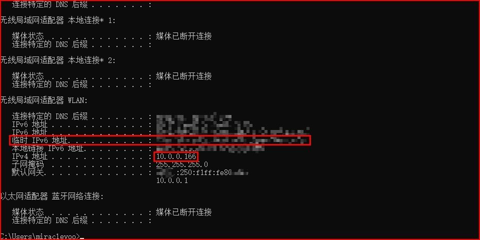
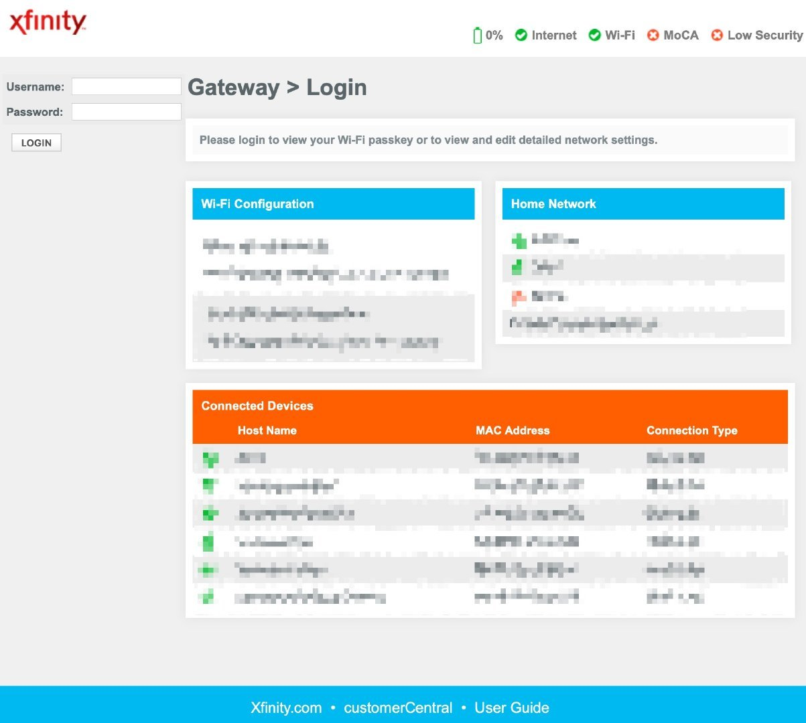
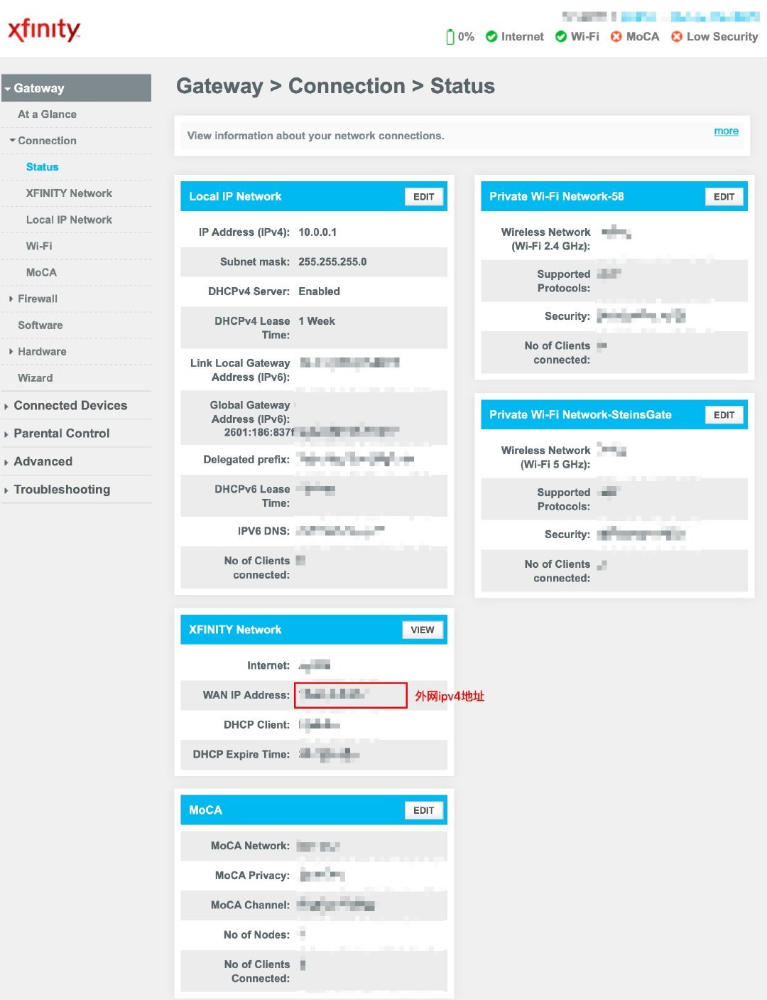
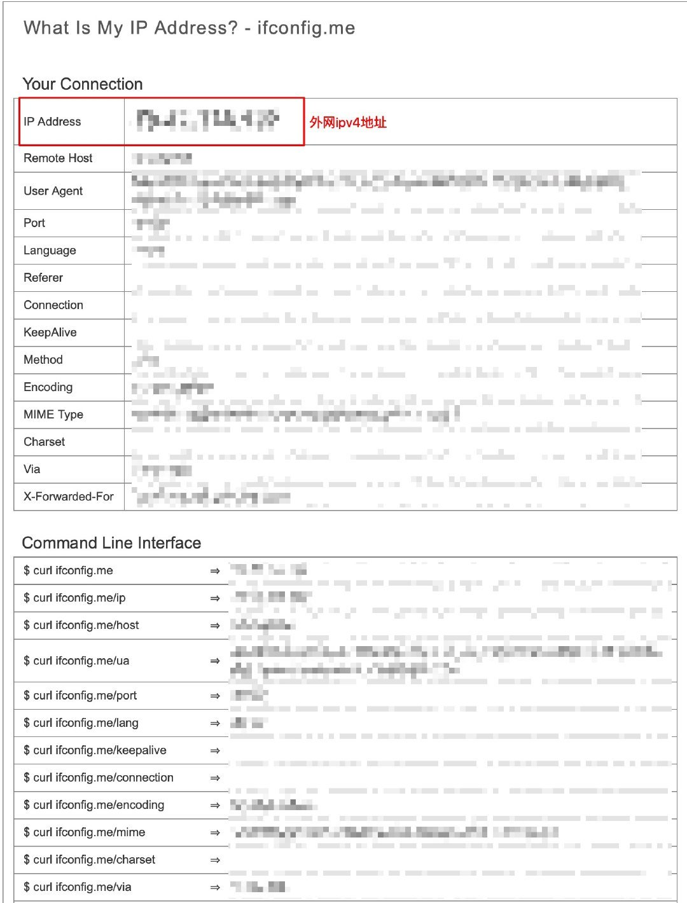
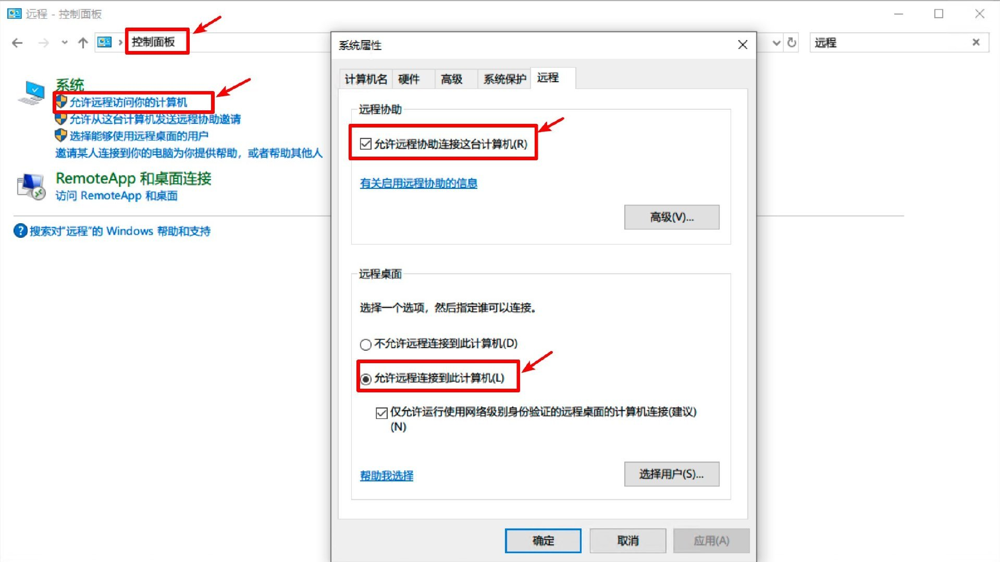
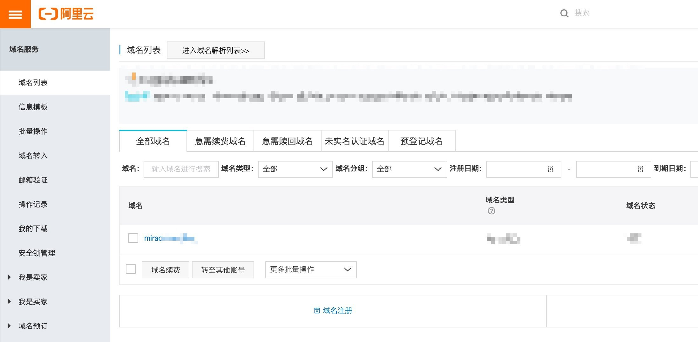
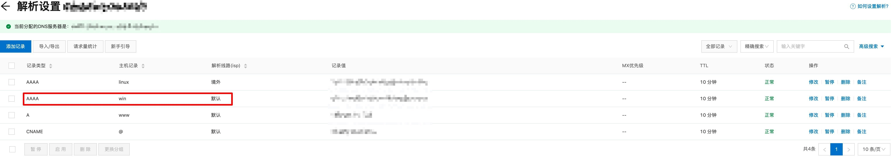

使用IPV6和远程桌面连接局域网中的主机
前几天装配了一个性能和体验都十分不错的主机之后，考虑到后面可能大多数时间我可能还是会在实验室里工作，所以为了随时能够访问主机中的各种资料、程序以及游戏而不用随时插拔并背上沉重的硬盘等设备，使用远程桌面进行访问是非常有必要的。
整个过程持续了接近一天，最终做到了：**不用花一分钱（前提是你拥有一个可用的域名），不使用花生壳之类的服务，能在相互间链路支持IPV6的设备访问自己的主机。(这一假设能否成立由相互间物理距离以及身边ipv6普及情况而定)**下面是详细的步骤说明：
查看主机与路由器的基本信息
为了远程访问我们的主机，首先有必要搞清楚一些基本的信息，如使用ipconfig确定IPV4/IPV6地址，并判断其ip是属于局域网还是公网。局域网有三段地址，判断方式如下：
A类，第一段为10的都为私网地址，或10.0.0.1–10.255.255.254，其中10.0.0.0表示整个网段，10.0.0.255是广播地址。
B类，以172.16–172.31开头的都是私网地址，或172.16.0.0.1–172.31.255.254，其中172.16.0.0表示整个网段，172.16.255.255是广播地址
C类，以192.168开头的都是私网地址，或192.168.0.1–192.168.255.254，其中192.168.0.0表示整个网段，192.168.0.255是广播地址

通常情况下，我们家中或实验室中的设备被分配的都是内网ip，注意这里的ip指的都是ipv4，之后再经由NAT(Net Adress Translation)被映射出外网。
查询路由器对应的公网ip由调查所知有两种易行方案：
- 直接登录路由器的管理页面查看
比如我使用的xfinity路由器，登录界面就是这样。而登录网址，往往是上图中的“默认网关”的ip地址，在我这里就是10.0.0.1


- 使用一些提供公网ip查询的网站进行查询。由于内网中的设备都经过了NAT的转换，所以查出来的这个ip既是你对外暴露的ipv4地址，也是路由器的ipv4地址，但这种方式比起直接登录查看可能会差一些，适用于没有路由器权限时使用。

打开主机上的关于远程连接的设置
具体操作如下图所示，打开控制面板中的远程设置，勾选相应选项即可。

局域网下验证ipv4连接与ipv6连接
在主机以外的设备上尝试对主机进行连接，确认局域网下可以进行连接。这里推荐微软的Microsoft Remote Desktop软件。其支持Windows、Mac、iOS、Android等主流平台，使用十分简易方便。此处不展开。
设置二级域名与解析
登录域名服务商

点击对应域名最右侧的“解析”按钮（在截图外面），进入域名解析设置。由于ipv4被设置了NAT，所以很难在不做内网穿透的情况下进行使用，尤其是在没有服务器的情况下，而租赁服务器的价格并不便宜，且链接速度将会同时受到穿透服务器的网速制约，所以并不推荐。
添加二级域名解析记录
综上所述，这里决定采用IPV6直接解析，这样做的好处是IPV6是不做NAT的，也即其和设备是唯一对应的，这是一个很方便的地方。于是，我们将在我们已经入手的域名上添加一个二级域名，即在一级域名前再加一个前缀，如domainname.com可以拥有无数个xxx.domainname.com，这个xxx可以自定义。
由于我们要做的是对ipv6的解析，所以这里添加一条AAAA记录。而这个记录是为了我的windows域名解析服务，所以这里我使用了“win”这个前缀（这个随意其实）。

这条记录对应的记录值即为刚才我们用ipconfig查出来的那个“临时ipv6地址”。保存退出。
在电脑上部署DDNS服务
我们现在已经拥有了一个与主机ipv6对应的域名，即我们现在已经可以使用域名访问我们的主机了（前提是前面在局域网内测试通过），我们在Microsoft Remote Desktop上新建一个连接，把刚才输入ip的地方这次输成刚才解析的域名，在我这即为“win.xxxxxxxx.xxx”。做一次连接测试，如果连接成功，那么恭喜你，你的ipv6地址已经很好的绑定到域名上了，我们可进行下一步——部署DDNS服务。
至于什么事DDNS，既然有现成的解释，我就不强行再加工了，下面附上知乎上一段说明：
DDNS的全称是动态域名服务，简单的说就是把一个IP地址映射到一个域名身上，一般大公司诸如百度这些IP都是固定的，而对个人用户来说，想有一个固定的家庭网络IP地址显然是一件不现实的事情，因为首先不说大部分人都是运营商的内网IP，即便少部分人申请到了公网IP，也都不是固定的，因为IPV4资源很紧张，不可能给每个人都分配公网IP，这个问题到IPV6可以解决，但是那也是以后的事情了，而且固定IP费用非常高昂，不是一般人可以承受的。但是我们在外网想要访问我们的家庭网络怎么办呢？这就需要DDNS了，DDNS将用户的动态IP地址映射到一个固定的域名解析服务上，用户每次连接网络的时候客户端程序就会通过信息传递把该主机的动态IP地址传送给位于服务商主机上的服务器程序，而服务器程序负责提供DNS服务并实现动态域名解析。这样我们只要在外部输入我们的域名就可以访问了，即便IP换了也是一样的。
当然，原文是讲用ipv4做DDNS，并要涉及到花生壳和路由器设置，但很多情况下着并不是我们想要和想要承受的负担。那么如何在没有路由器权限的情况下做到动态的域名解析？
这里我使用了码云上一个Windows的动态域名解析服务，详情请自行点击链接研究，这里不做过多说明。简单的原理就是它在后台开了一个Windows服务，这个服务每隔x分钟便会将你电脑当前的ipv6地址解析到阿里云的云解析服务器上，最优秀的是它是默认开机启动的，从此妈妈再也不用担心我的域名没法实时解析！
当然，如果你是linux用户，其实你的选择更多，GitHub上有好几个动态解析代码可供使用，这里列出几个：
- https://github.com/yyqian/aliyun-ddns
- https://github.com/AlanLang/aliyun-ddns-server
- https://github.com/rfancn/aliyun-ddns-client （这个是py脚本，不过只支持ipv4解析，姑且列上来）
配置好后，理论上你就拥有了一个可以被外网访问到的主机了，恭喜你！